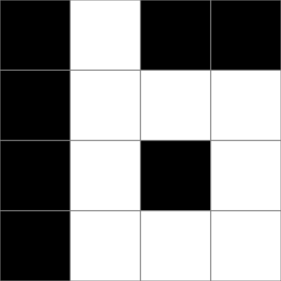
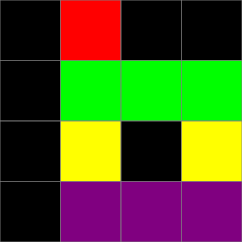
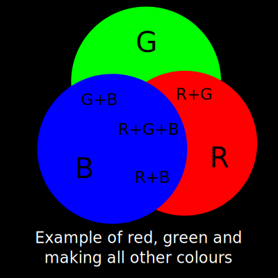
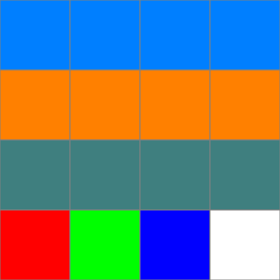
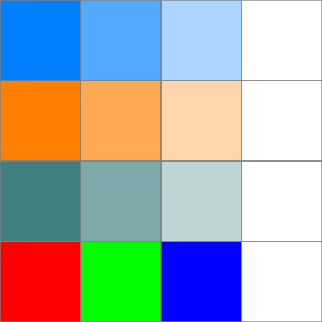
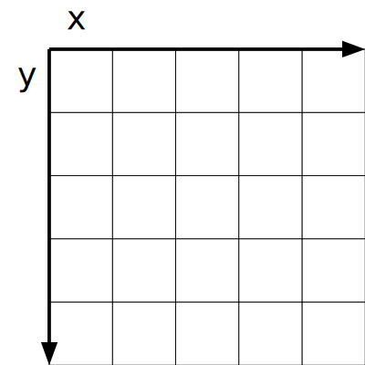

Bitmaps
Bitmaps — or more generally raster graphics — store an image as a grid of colours. This can then be sent directly to the screen, which is a grid of lights, called pixels, that change colour based on the values in the bitmap.
In other words, we are mapping the bits in the image to the pixels on the screen.
Let us start simple. Take this grid of numbers, where \(1\) means the cell is lit (white) and \(0\) means the cell is off (black): $$\begin{bmatrix} 0 & 1 & 0 & 0 \\ 0 & 1 & 1 & 1 \\ 0 & 1 & 0 & 1 \\ 0 & 1 & 1 & 1 \end{bmatrix}$$
Which makes this image:

What if we want to add more than one colour? There are a few ways to do this. The most obvious method is to add new numbers and assign them directly to colours. Let's make the following mapping: $$\text{Off} = 0 \\ \text{Red} = 1 \\ \text{Green} = 2 \\ \text{Blue} = 3 \\ \text{Yellow} = 4 \\ \text{Purple} = 5 \\ \text{Grey} = 6 \\ \text{Full on} = 7$$
... find an example ... $$\begin{bmatrix} 0 & 1 & 0 & 0 \\ 0 & 2 & 2 & 2 \\ 0 & 4 & 0 & 4 \\ 0 & 5 & 5 & 5 \end{bmatrix}$$
... and visualise!

But now, an issue: your screen can display 16 million colours. And no one is crazy enough to assign 16 million colours in a way that is sane. So, what should we do?
We can use the properties of light to help. Roughly speaking, in light, you only need red, green and blue lights and a way to control their intensitity in order to make any other colour of light.

So, we just need to store the intensity of red, green and blue per pixel.
A good way to store this is by using integers in the range \([0, 255]\), where \(0\) is fully off and \(255\) is completely on, since these are the extreme values of an unsigned byte.
We can use three unsigned bytes for each pixel to store the red, green and blue channels; let's denote them using \((r, g, b)\) and create an example of this: $$ \begin{bmatrix} (0, 127, 255) & (0, 127, 255) & (0, 127, 255) & (0, 127, 255) \\ (255, 128, 0) & (255, 128, 0) & (255, 128, 0) & (255, 128, 0) \\ (63, 127, 127) & (63, 127, 127) & (63, 127, 127) & (63, 127, 127) \\ (255, 0, 0) & (0, 255, 0) & (0, 0, 255) & (255, 255, 255) \end{bmatrix} $$
That gives us this bitmap:

There is one last thing we might want to add: some way to store the transluscentcy (see-through-ness) of a pixel so that we can see other things thorugh our image if we put it on top of another.
Usually, we add another channel (number) for each pixel that denotes its transluscentcy.
And conventionally, that channel is called "alpha" (for the greek letter \(\alpha\)) where \(255\) is usually opaque and \(0\) is transparent.
When we begin to combine pixels with alpha channels, we will interpolate (fade) between the two pixel values using the alpha channel. The most common is linear interpolation.
Let's see an examaple where we have \((r, g, b, \alpha)\)! $$ \begin{bmatrix} (0, 127, 255, 255) & (0, 127, 255, 170) & (0, 127, 255, 85) & (0, 127, 255, 0) \\ (255, 128, 0, 255) & (255, 128, 0, 170) & (255, 128, 0, 85) & (255, 128, 0, 0) \\ (63, 127, 127, 255) & (63, 127, 127, 170) & (63, 127, 127, 85) & (63, 127, 127, 0) \\ (255, 0, 0, 255) & (0, 255, 0, 255) & (0, 0, 255, 255) & (255, 255, 255, 0) \end{bmatrix} $$
The final image:

Now see that if we change the background, the total colour changes with any pixel that isn't opqaue and transluscent pixels blend together with the background.
Let us start programming now! You can probably stop reading here and do it yourself, but I will provide a description of what I would do in a C-like (mid-level) language.
Programming!
First, I would create a record to represent our pixels and hold our bitmap data:
record pixel_t { uint8_t r, g, b, a; } record bitmap_t { int32_t width, height; pixel_t *data; }
You could just use plain uint8_ts or uint32_t with bitwise ops for the pixels, but I find its easier to manage when its in a structure. Plus, it should not add any overhead.
Now, I will lay out the defitions of the functions that we will use — there are not that many for a basic bitmap object:
errorcode_t bitmap_init(bitmap_t *this, uint32_t width, uint32_t height); void bitmap_free(bitmap_t *this); pixel_t bitmap_get_pixel(bitmap_t *this, uint32_t x, uint32_t y); void bitmap_set_pixel(bitmap_t *this, uint32_t x, uint32_t y, pixel_t colour);
We can almost immidately implement them, but first we will want to figure out how to get from the \(x\) and \(y\) coordinate to an index in the array.
Most of the time, we will have \(x\) going left to right and \(y\) from top to bottom, storing the image y-major and x-minor. That is what we will do here.

To access a pixel in any row, we can just say that it is located at \(\text{OffsetToRow} + x\), where \(x\) is the x-coordinate.
To get the start of the \((y + 1)\)th row, and therefore \(\text{OffsetToRow}\), we can find \(y \cdot \text{Width}\), the start of row \(y\).
Finally, we can plug this back together to find that the offset for any pixel is \(y \cdot \text{Width} + x\). We can then just implement this directly:
let bitmap_pixel_index(x, y, width) = y * width + x;
Now we can start to implement bitmap_init, which is mostly language-specific:
errorcode_t bitmap_init(bitmap_t *this, uint32_t width, uint32_t height) { fill_zero(this, sizeof *this); this->width = width; this->height = height; this->data = allocate(sizeof *this->data * width * height); if (this->data == null) { return errorcode.failure; } return errorcode.success; }
As well as bitmap_free:
void bitmap_init(bitmap_t *this) { free(this->data); }
Then we can implement getting a pixel, which we will do by calculating the index then returning the pixel value:
pixel_t bitmap_get_pixel(bitmap_t *this, uint32_t x, uint32_t y) { return this->data[bitmap_pixel_index(x, y, this->width)]; }
It might seem like we would implement getting a pixel similarly, but we do need to remember there is an alpha channel: